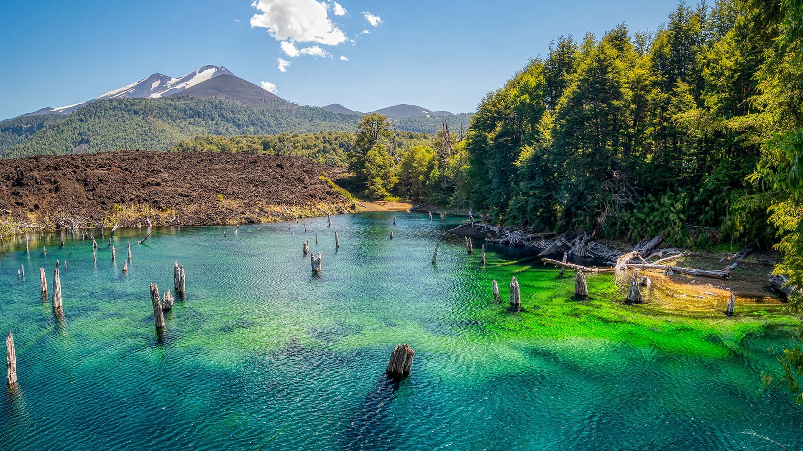
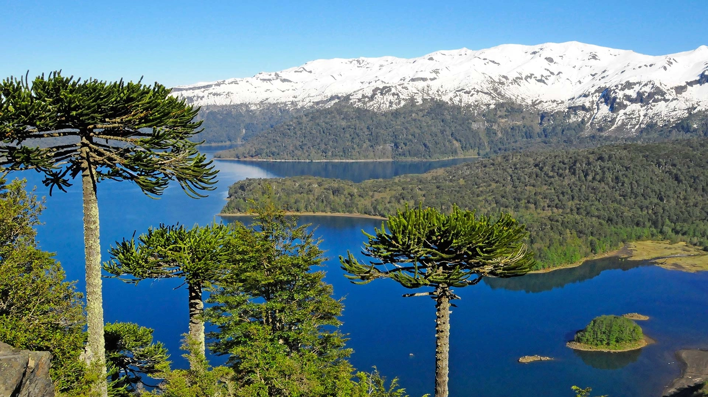

Conguillío
Región: La Araucanía
Comuna: Melipeuco
Tipo: Parque nacional
Declaración: 1970
Estado: Protegido
Enclavado en la Región de La Araucanía, es considerado uno de los últimos reductos en el mundo que preservan el aspecto del periodo Jurásico. Su paisaje está moldeado por la imponente presencia del volcán Llaima, extensos bosques de araucarias milenarias y lagos de aguas cristalinas como el Lago Conguillío y la Laguna Verde, rodeados por impresionantes campos de escoria volcánica.